Какой арт дополнит «Конструкт»
Графика для нашего интерфейса: геометрические глифы, моно-подписи, тонкие границы, зелёный акцент, миллиметровка. Игровой характер появляется в силуэте и смешной сборке. Ниже — два концепта внутри светлого и тёмного экрана, основанные на реальном скриншоте.
A · Геометрические лабораторные стикеры РЕКОМЕНДАЦИЯ
Скруглённые простые фигуры, маленькая мимика, мох / песок / бирюза / ржавчина. Белый край отделяет детали от сцены. Статы можно выразить формой: клин, квадрат, панцирная пластина.
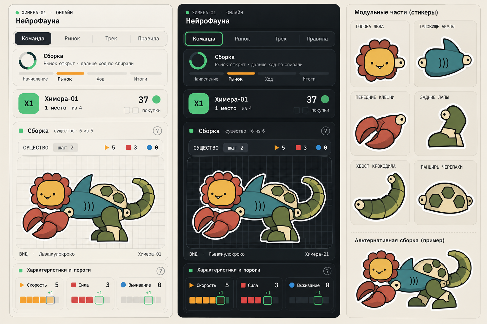
B · Печатный полевой бестиарий
Две основные краски и лёгкая печатная фактура только в деталях. Тёплый характер полевого блокнота при спокойной оболочке приложения.
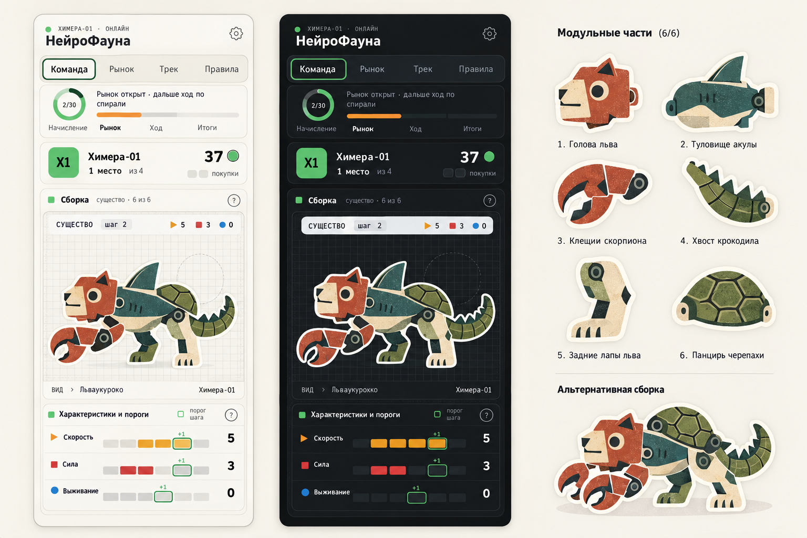
Это AI-макеты для выбора направления. Тексты и компоновка в иллюстрациях приблизительные; изображения ещё не установлены в приложение. Нажмите на любой лист, чтобы рассмотреть крупно.
Широкий поиск: все 9 направлений с двумя сборками
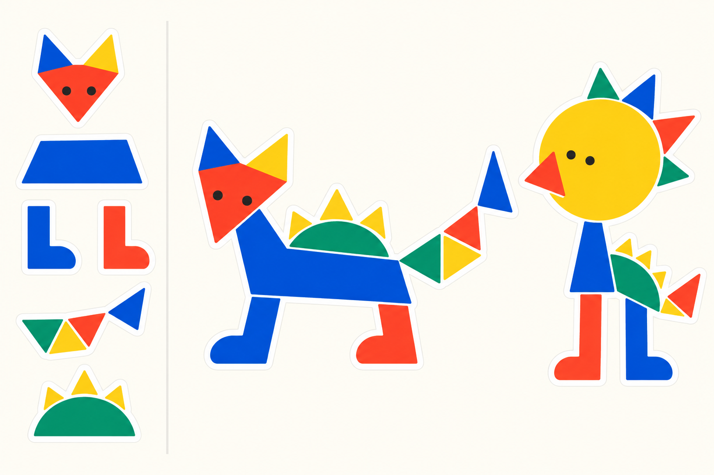
01 · Танграм: звери из фигур
Треугольники, круги и трапеции; минимум деталей, сборка как головоломка.
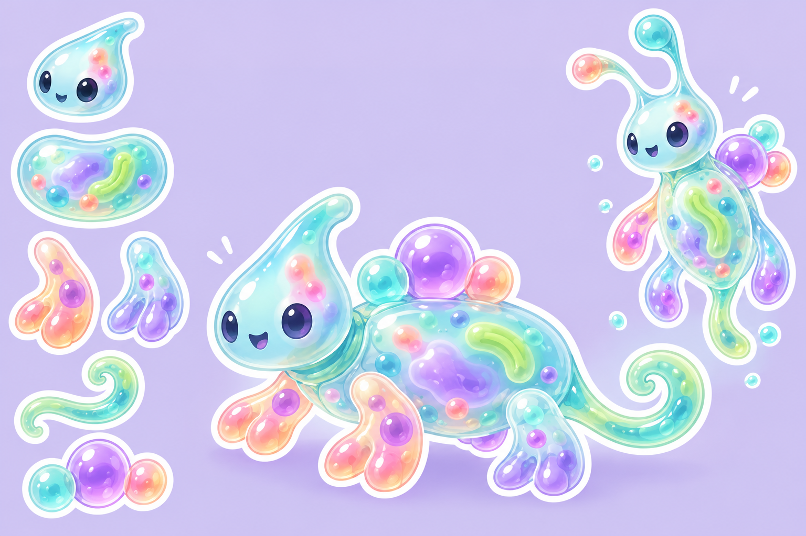
02 · Микробы и желейные клетки
Органические капли, мембраны и пузырьки; эволюция как выращивание организма.
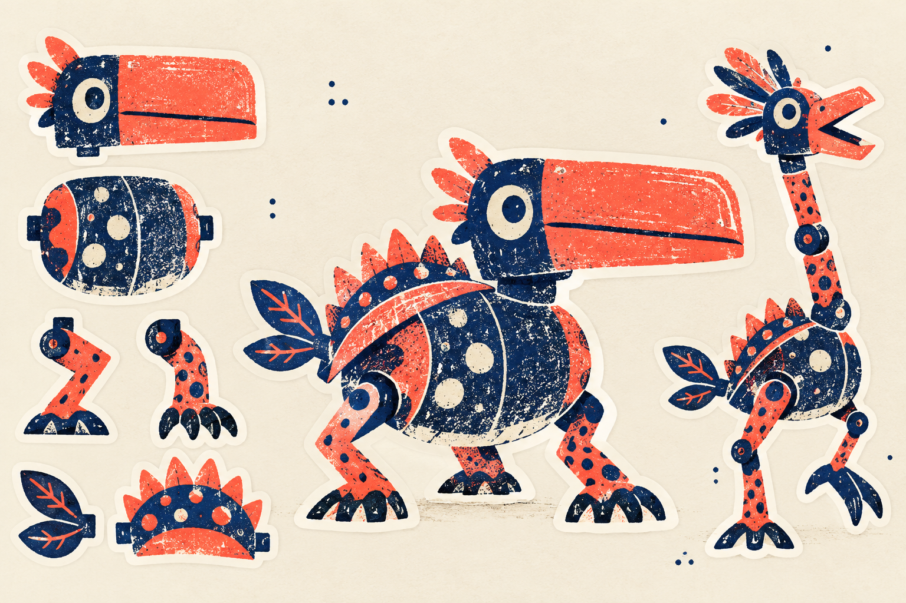
03 · Лабораторные штампы
Две краски, грубая печать и смешные силуэты; коллекция отпечатков.
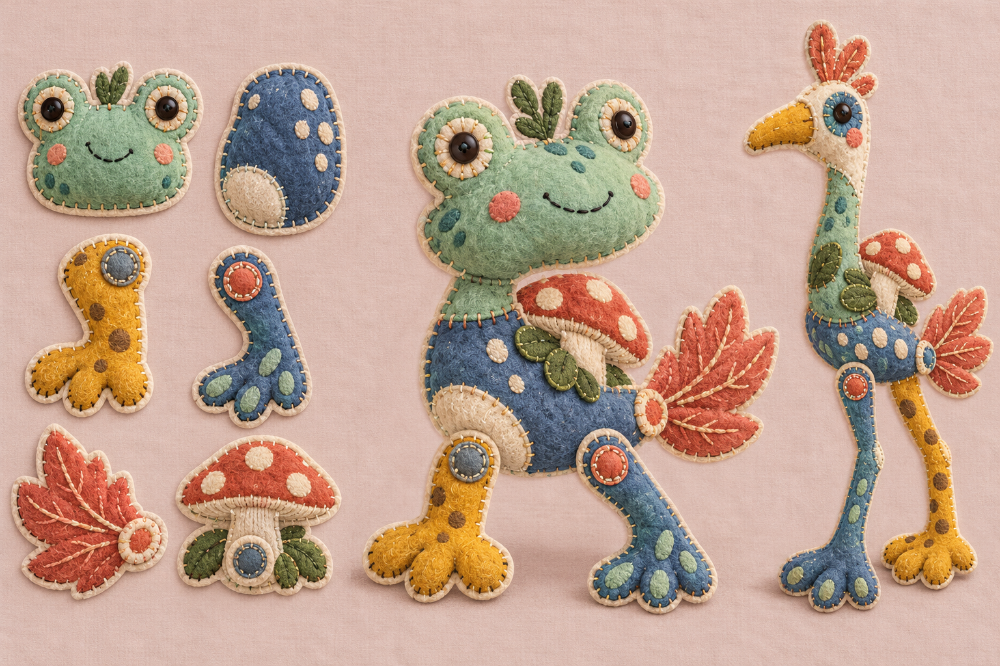
04 · Существо из нашивок
Фетр, швы и пуговицы; сборка как починка собственной игрушки.
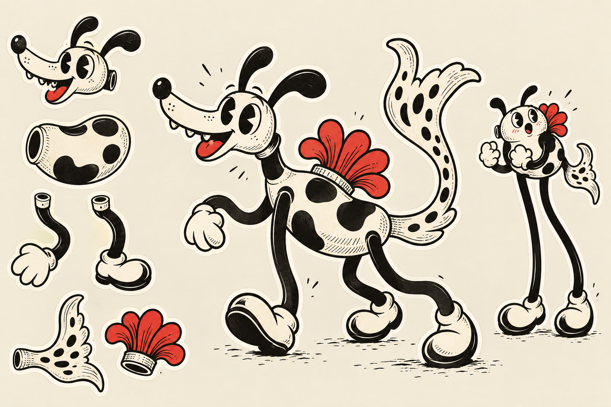
05 · Резиновая мультяшка
Чёрный контур, длинные гибкие конечности и преувеличенные эмоции.
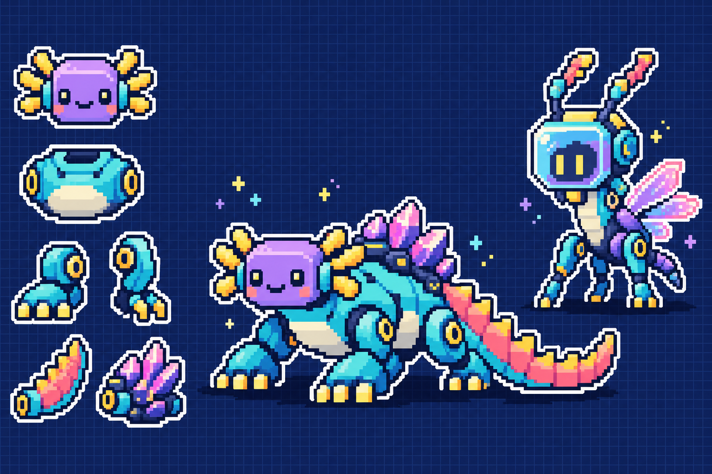
06 · Пиксельная лаборатория
Крупные пиксели, цифровые мутации и детали как игровые трофеи.
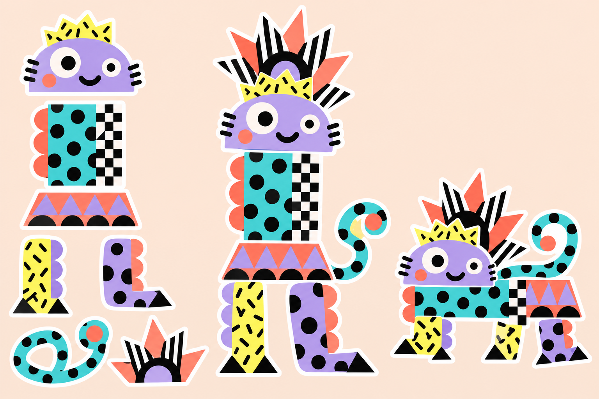
07 · Геометрический тотем
Вертикальная башенка из смешных модулей с узорами и лицами.
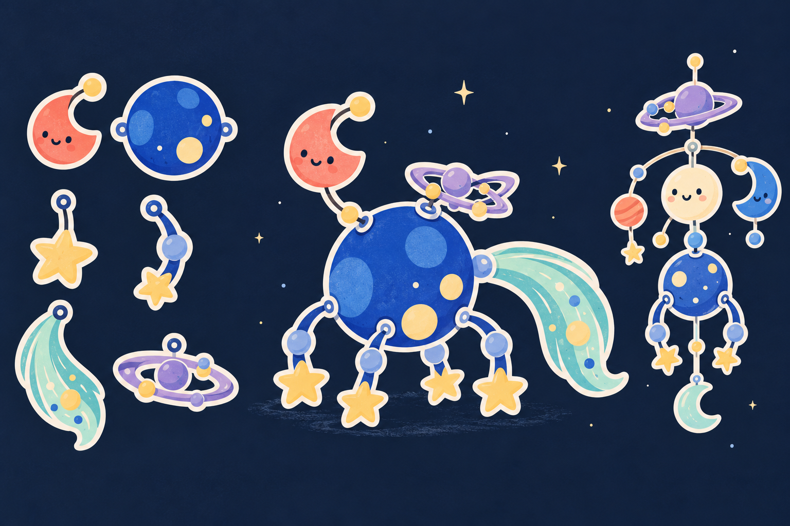
08 · Орбитальный питомец
Планеты, спутники и кольца; организм как маленькая солнечная система.
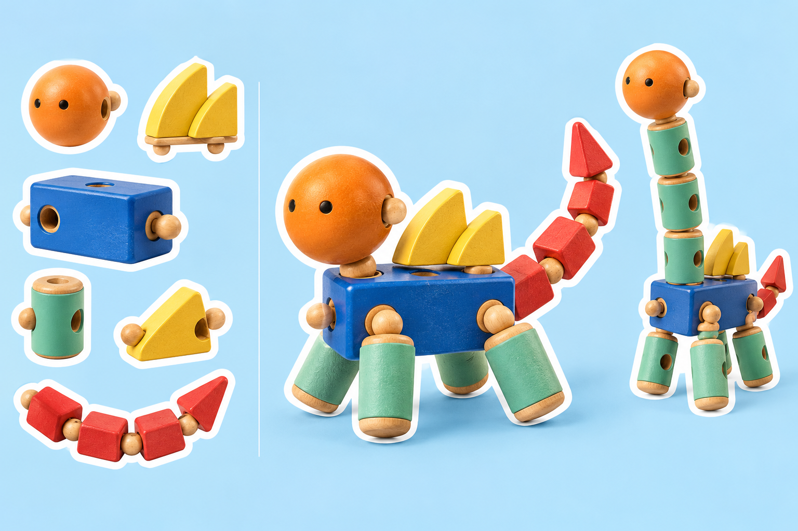
09 · Магнитный конструктор
Деревянные кубики, шарниры и цветные соединения; сборка как игрушка.